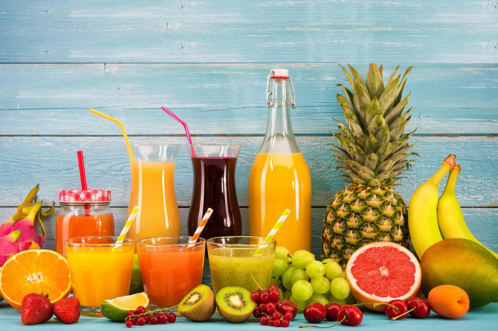

Make your own juice service
Tired or drinking the same juice? Can't find the exact flavour you are looking for? Thank try our new 'Make your own juice' service!
'Make your own juice' is a new feature on our app. You can pick to make your own blend of juice with just a few touches on your screen. You can either choose to pick up your customized juice at your local Fruits Vill store or get it deilivered to your doorstep!